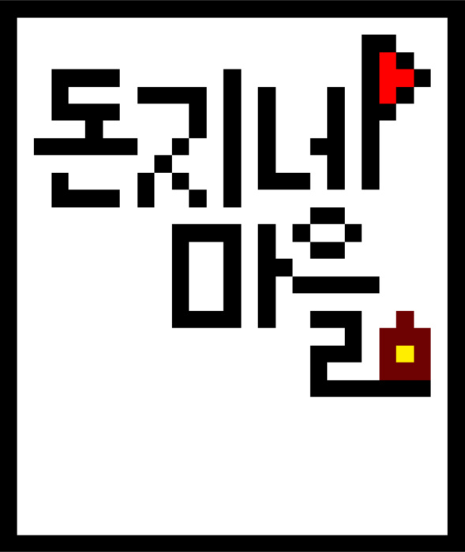
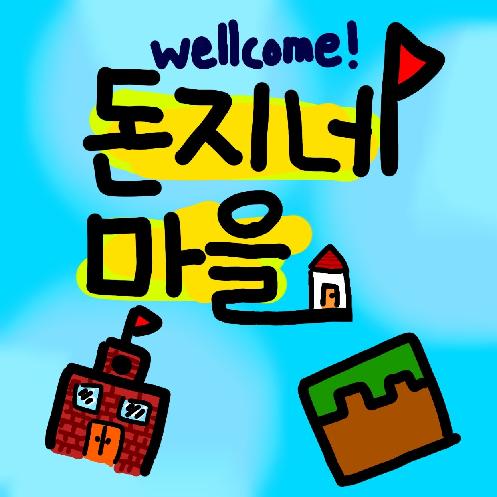

<!DOCTYPE html>
<html lang="en">
<head>
    <meta charset="UTF-8">
    <meta name="viewport" content="width=device-width, initial-scale=1.0">
    <title>logos</title>
</head>
<body>
</body>
</html>
<!--설정-->
<style> section {
    padding: 20px;
    text-align: center;
}

#loos { color: white; }

nav {
            background-color: #444;
            padding: 5px 0;
            text-align: center;
}
</style>
<!--설정 끝-->

<!--전시 설정-->

    <style>
        /* 각 이미지를 보기 좋게 정렬하기 위한 CSS */
        .image-container {
            display: flex;
            flex-wrap: wrap;
            gap: 20px; /* 이미지 간격 조정 */
        }
        .image-container img {
            max-width: 175px; /* 이미지 최대 너비 설정 */
            max-height: 200px; /* 이미지 최대 높이 설정 */ 
        }
    </style>


<!--전시 설정 끝-->

<div id="loos">
<nav><h1><p><h1>돈지네 로고 박물관</h1>
    <h2>돈지네 로고를 관찰 하세요.</h2></p></nav>
</div>
    logos

    <!--전시-->
</head>
<body>
    <div class="image-container"><!-- 각 이미지를 추가합니다. -->
        
        <p><h1><strong>"최초의 돈지네 로고"</strong><br>
            logo creator<br>loke_1353</h1></p>
        
        <p><h1><strong>"조금 리메이크된 돈지네 로고"</strong><br>
            logo creator<br>Lucky54910</h1></p>
        
        <!-- 필요한 만큼 이미지를 추가할 수 있습니다. -->
    </div>
</body>
</html>
<!--전시 끝-->


<!--이미지 복사 방지 시스템-->

<!--우클릭 방지-->
<script type="text/javascript">
    document.addEventListener('contextmenu', function (e) {
        e.preventDefault(); 
    });
</script> 
<!--우클릭 방지-->

<!--이미지 복사 방지 시스템 끝-->


<!--리로드 버튼-->

<!--메뉴 글씨-->
<h1>리로드 버튼</h1>
<!--메뉴 글씨-->

<!--설정-->
<style>
    /* 버튼 스타일 */
    .reload-button {
        background-color: #4e504e; /* 배경색 */
        border: none; /* 테두리 없음 */
        color: white; /* 글자색 */
        padding: 10px 20px; /* 내부 여백 */
        text-align: center; /* 텍스트 가운데 정렬 */
        text-decoration: none; /* 텍스트 밑줄 없음 */
        display: inline-block; /* 인라인 블록 요소로 설정 */
        font-size: 14px; /* 폰트 크기 */
        cursor: pointer; /* 커서 모양 */
        border-radius: 30px; /* 모서리 둥글게 */
        outline: none; /* 포커스 시 테두리 없음 */
        transition: background-color 0.3s; /* 배경색 변경 시 부드러운 전환 */
        width: 100px; /* 버튼 너비 설정 */
        height: 40px; /* 버튼 높이 설정 */
    }

    /* 버튼 호버 시 배경색 변경 */
    .reload-button:hover {
        background-color: #323232;
    }
</style>
<!--설정 끝-->
</head>
<body>
<!-- 리로드 버튼 -->
<button class="reload-button" onclick="reloadPage()">↻</button>

<!-- JavaScript 코드 -->
<script>
    function reloadPage() {
        location.reload(); // 현재 페이지를 다시 불러옵니다.
    }
</script>
</body>
</html>
<!--리로드 버튼 끝-->


<p><button onclick="window.location.href = 'Don-jee-neh.html';">돌아가기 »</button></p>
<section><p>&copy; 2024 돈지네</p></section>


</body>
</html>